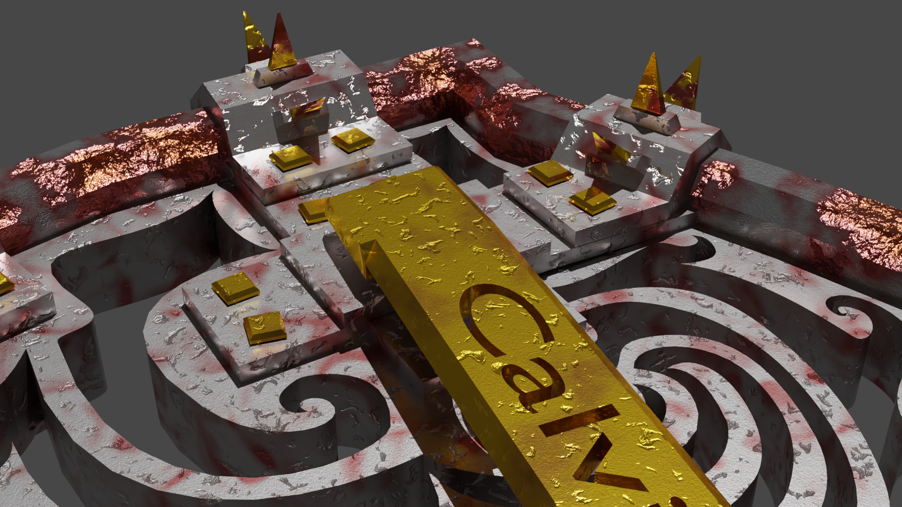
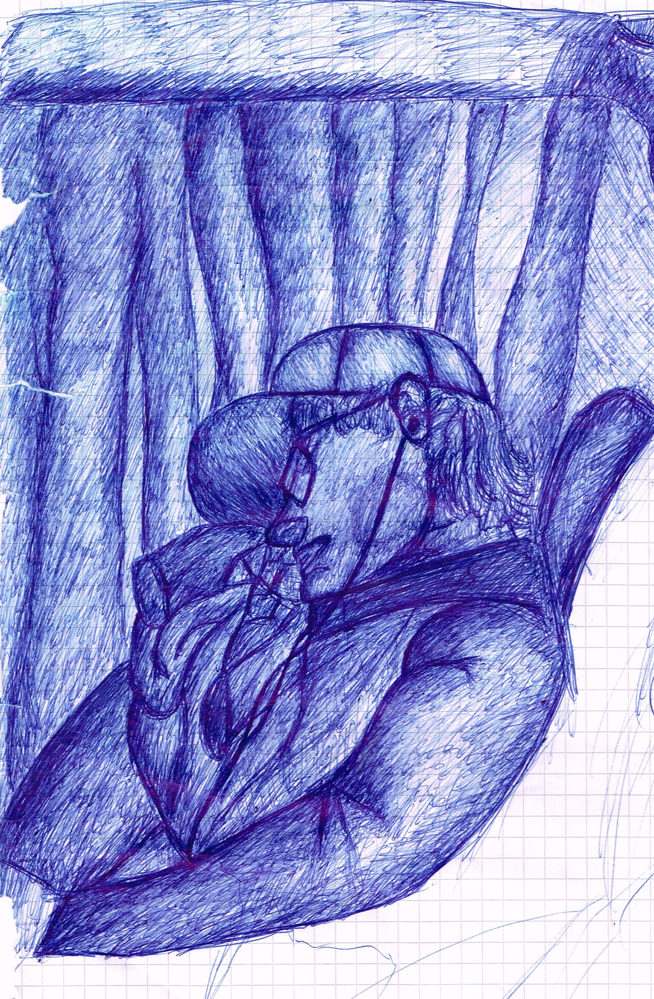

Meine Werke:
Eine kleine Vorschau meiner bisherigen 3D-Modellierungserfahrung
| Ein Turret für Valentins Tower-Defense-Game (Download Mesh): | Eine Truhe | Und dessen Schloss |
|---|---|---|

|

|
|
| Eine Wackelpudding-Simulation (etwas zu klebrig) | Ein verrücktes U-Boot | Ein Schild |
|  | ||
| Ein Korallenriff | Ein Donut | Ein brennender Affenkopf |

|
Drei Musikstücke, die ich elektronisch komponiert habe
|
Fuwashima (Soundtrack zum GlobalGameJam2020) |
PiSong | VocalRemixTrap |
|---|---|---|
Zeichnungen von mir
| Donald Trump, Kugelschreiberzeichnung | Schlafend im Bus, Kugelschreiberzeichnung | Tribal, Tuschezeichnung |
|---|---|---|

|
 |